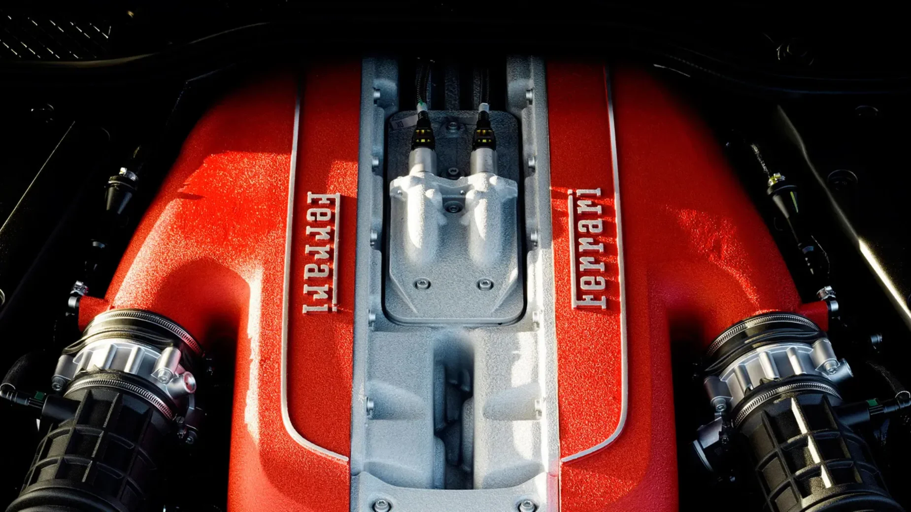
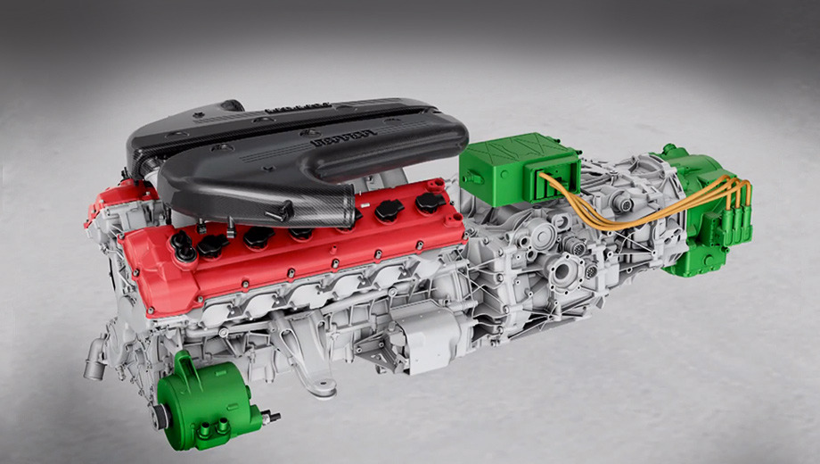
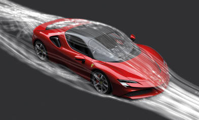
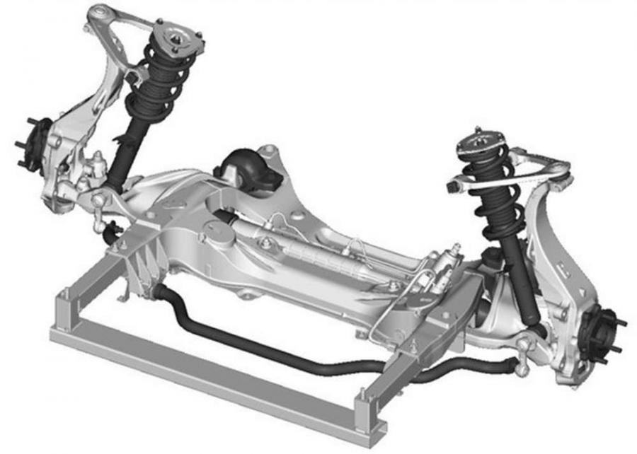

Информация о Ferrari
Подробная техническая информация и характеристики
История двигателей Ferrari
Этапы развития двигателей Ferrari:
- 1947-1950: Первые V12 двигатели
- 125 S - первый автомобиль Ferrari
- Объем: 1.5 литра
- Мощность: 118 л.с.
- 1950-1960: Эра классических V12
- 250 GT - легендарная модель
- Объем: 3.0 литра
- Мощность: 240 л.с.
- 1960-1980: Переход к V8 двигателям
- 308 GTB - первый массовый V8
- Объем: 3.0 литра
- Мощность: 255 л.с.
- 1980-2000: Турбированные двигатели
- F40 - первый турбированный Ferrari
- Объем: 2.9 литра
- Мощность: 478 л.с.
- 2000-настоящее время: Современные технологии
- Гибридные системы
- Прямой впрыск топлива
- Системы изменения фаз газораспределения
Ключевые особенности двигателей Ferrari:
- Высокооборотные двигатели (до 9000 об/мин)
- Алюминиевые блоки цилиндров
- Титан в клапанных механизмах
- Системы принудительного наддува
- Экологичные гибридные технологии
Двигатель Ferrari F140 V12

Комментарий: Легендарный двигатель F140 V12 объемом 6.0 литра, устанавливаемый на Ferrari 599 GTB Fiorano. Этот двигатель развивает мощность 620 л.с. и является одним из самых мощных атмосферных двигателей Ferrari.
Современные технологии Ferrari
Сравнение технологий Ferrari
| Технология | Описание | Применение | Ссылки |
|---|---|---|---|
|
 HY-KERS |
Гибридная система рекуперации кинетической энергии | SF90 Stradale, LaFerrari | SF90 Stradale |
|
 Active Aero |
Активная аэродинамическая система | 488 Pista, F8 Tributo | F8 Tributo |
|
 SCM-E |
Магнитореологическая подвеска | 488 GTB, Roma | Roma |
Галерея Ferrari
Нажмите на миниатюру для просмотра в полном размере: